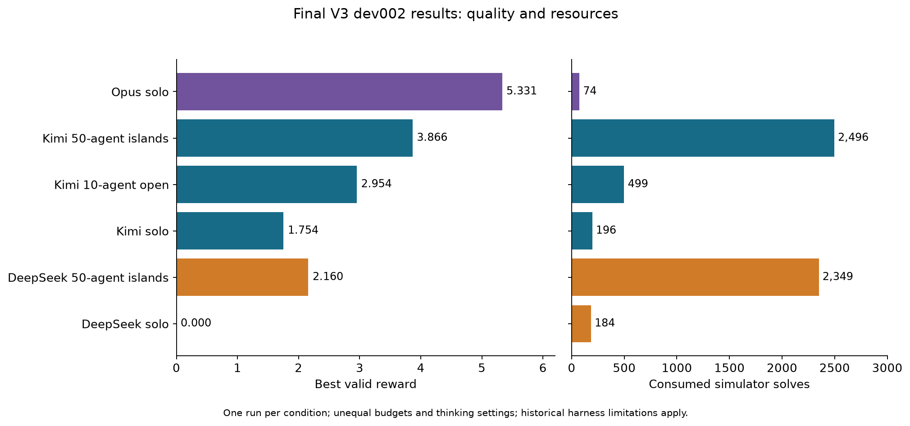

Experiment results
Start here: research report, final results and evidence
Single agents, swarms and memory in chemical plant design. Read the findings · Inspect the evidence.
Final V3 dev002 results
The 50-agent island configurations reached the best team endpoints: Kimi 3.866 at 2,496 solves and DeepSeek 2.160 at 2,349. Opus solo reached 5.331 at 74 solves. These are single-run endpoints with unequal budgets and model thinking settings; historical harness defects limit claims about exchange policies. Final results and evidence.

Earlier memory comparison
On dev000, the sharing swarm reached 7.65% higher simulated annualized net value than solo using roughly five times the queries; solo led at equal queries. Extra Past retrieval did not improve endpoints in that matrix. Memory-control evidence.
Studies
Evidence coverage
53 completed runs with identifiable summaries; 12 stopped or partial registry entries. Final exports supersede earlier snapshots for the same run IDs. Download registry · Source commits.
The corpus campaign ended with completed solo and immediate-sharing conditions; delay25 is user-stopped partial and delay50 never started. Diagnostic appendix. This result is retained in the full record without an architecture-wide conclusion.
Saved corpus campaign snapshot captured 2026-11-15T21:07:30.138523+00:00. Completed campaign diagnostic. This page does not report live experiment status.
Historical benchmark catalogue · Historical research narrative